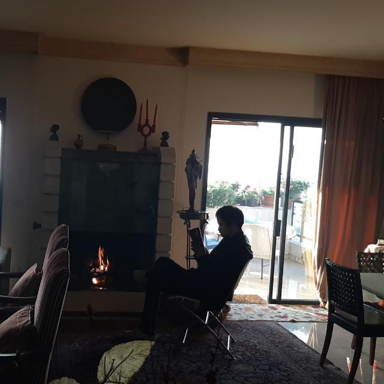
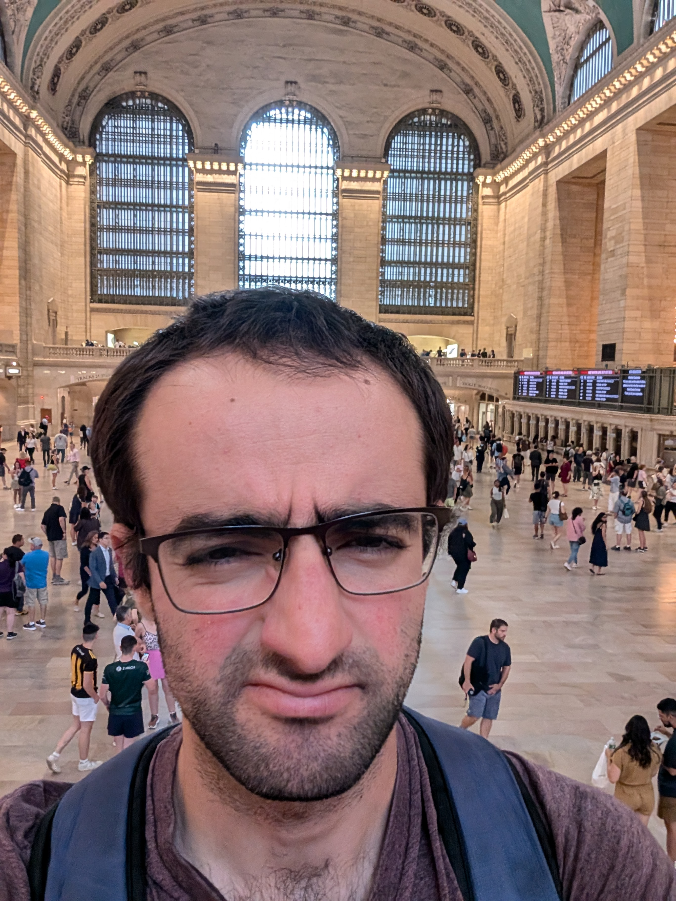

My name is Nerses. I've been teaching myself the basics of web development on an off for the past two and a half years. I've been slacking off a lot the past year, especially when I was working at my last job and starting practicing Zazen more seriously.
Here's a picture of me:
Hm, that doesn't seem like a nice picture, you don't get to see my face. Here's a headshot:
Ugh... that picture makes me look like a real sourpuss. It looks like I'm not impressed by Grand Central Station. Here's another one:

There we go! A picture of me smiling. Third time's the charm. 😄